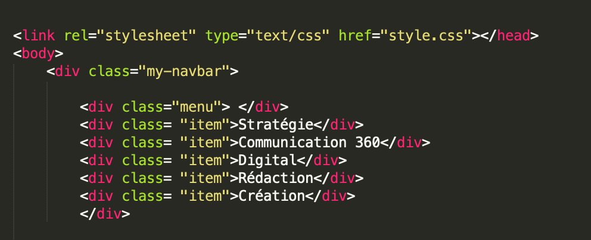

L'école : master 1 de communication globale et stratégies des marques à SUP de PUB
Le rythme : 2 semaines en entreprise et 1 semaine à l'école et à partir d'avril full entreprise
La durée : idéalement de 2 ans
Le coût financier : l'État propose une aide financière pour tout contrat d'alternance effectué avant le 30 juin 2022
Je vous propose de découvrir mon CV sous forme de site, que j'ai créé en codage sur Sublime Text.

MON PARCOURS :
2022-2023 : master 1 stratégies des marques à Sup de Pub
2021-2022 : 3 ème année à l'EFAP
2021-2020 : 2 ème année à l'EFAP
2019-2020 : année sabbatique en Amérique du Sud
2016-2018 : diplôme du BTS en immobilier
2016 : bac STMG
MES COMPÉTENCES :
Organisation de projet
Planification
Capacité rédactionnelle
Conception de support de communication
Élaboration plan de communication 360°
Élaboration stratégie digitale
Gestion réseaux sociaux
MES OUTILS :
Pack Office
Indesign
Photoshop
Adobe XD
Sublime Text
WordPress
Bonnes bases de Illustrator et Première Pro
LANGUES :
Anglais : niveau scolaire fluide / Espagnol : bon niveau
MES EXPÉRIENCES :
BATTLE EFAP (mars 2022)
Projet pour l'agence événementielle Chérie Chéri, création d'une landing page, audit SEO et ergonomie de l'application mobile, projet en groupe
Assistante chef de projet chez MAISONS DU MONDE (5 mois)
Studios de création - Graphisme, Photos, Vidéos
- Suivi de la production des catalogues 2022 (Printemps-Été/KIDS/BtB)
- Suivi de l'ordonnancement de production
- Participation aux shootings
- Participation aux briefs créatifs
- Création de vidéos pour les réseaux sociaux
- Mise à jour du site corporate
- Participation à la création et au lancement de la Raison d'être de Maisons du Monde
- Participation au lancement d'un nouveau label au côté de la RSE et des studios
BATTLE EFAP (avril 2021)
Projet pour l'association "Surf Rider", création d'une vidéo promotionnelle et d'une stratégie digitale sur Instagram et Facebook, projet en groupe
Assistante attachée presse chez MADAME KOTOBA (4 mois)
- Participation aux recommandations RP
- Rédaction communiqués de presse
- Élaboration de pressbooks/reportings/fichiers médias
- Relation influenceurs - mise en place de partenariats + envoi de portages
- Création d'évènements digitaux : webinar
- Création de journée presse : prestataires et devis
- Relance journalistes
BATTLE EFAP (octobre 2021)
Projet pour la start-up bordelaise "Sunday", mise en place d'une stratégie digitale sur Instagram, Facebook et Linkedin, projet de groupe
Serveuse dans une brasserie bistronomique (6 mois)
- Serveuse salle
- Serveuse bar et encaissement
- Serveuse lors de séminaires ou mariages
- Rigueur, autonomie, persévérance et esprit d'équipe
Stage dans une étude notariale (2 mois)
Partie juridique des contrats immobiliers
Stage en transaction immobilière (4 mois)
Visites, ventes, prospection, accueil chez SQUARE HABITAT
LES 3 DERNIÈRES RAISONS DE M'ENGAGER DANS VOTRE ÉQUIPE